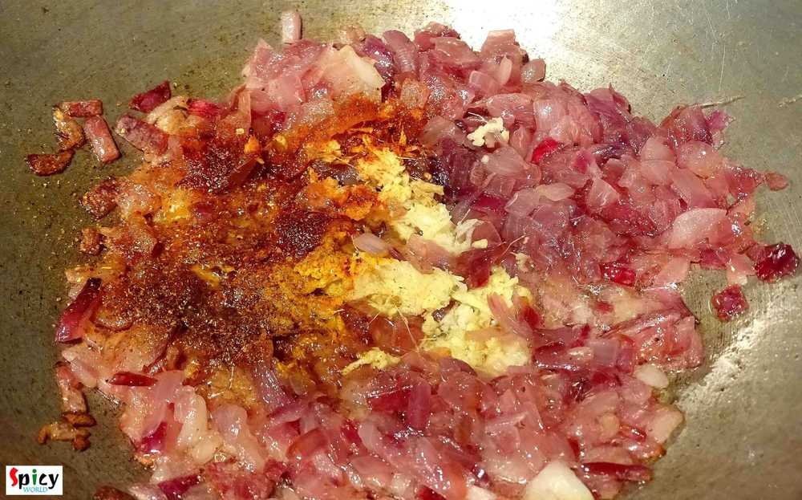
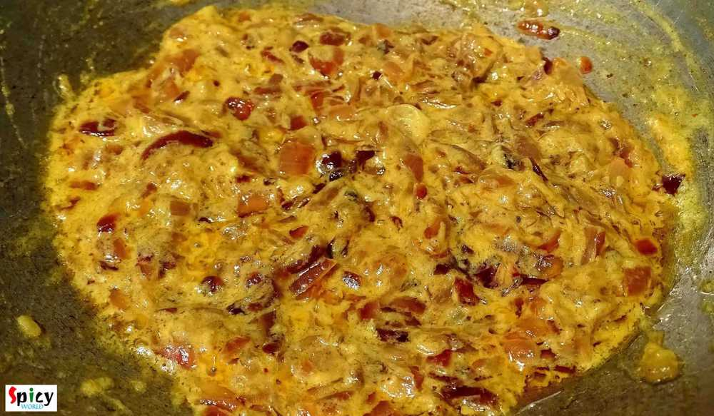
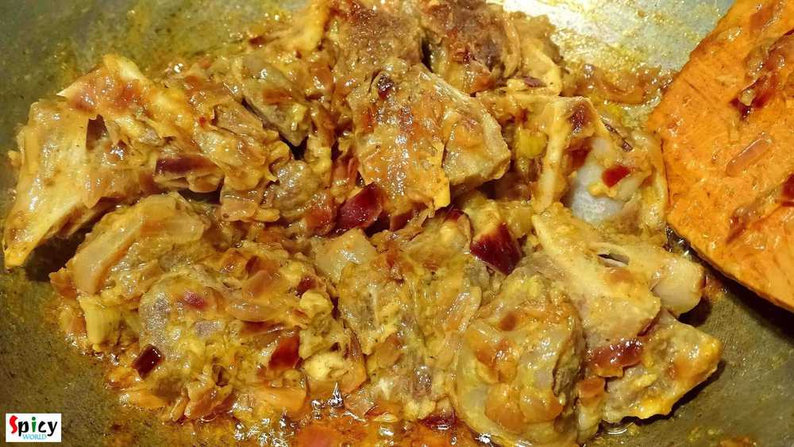
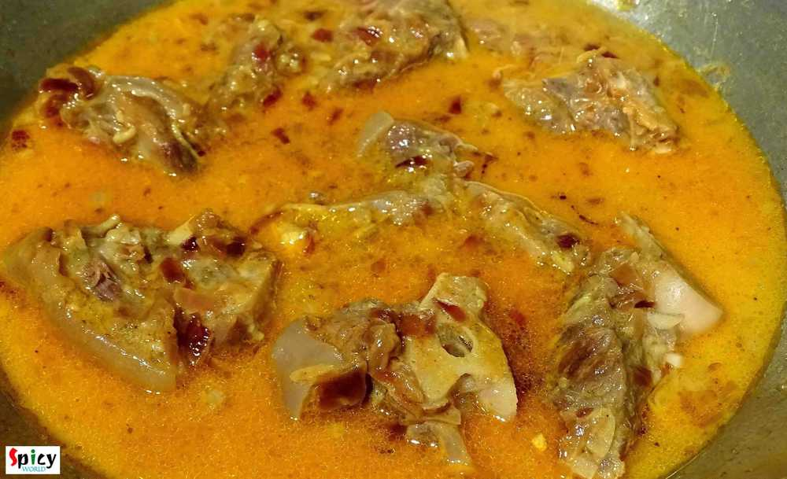
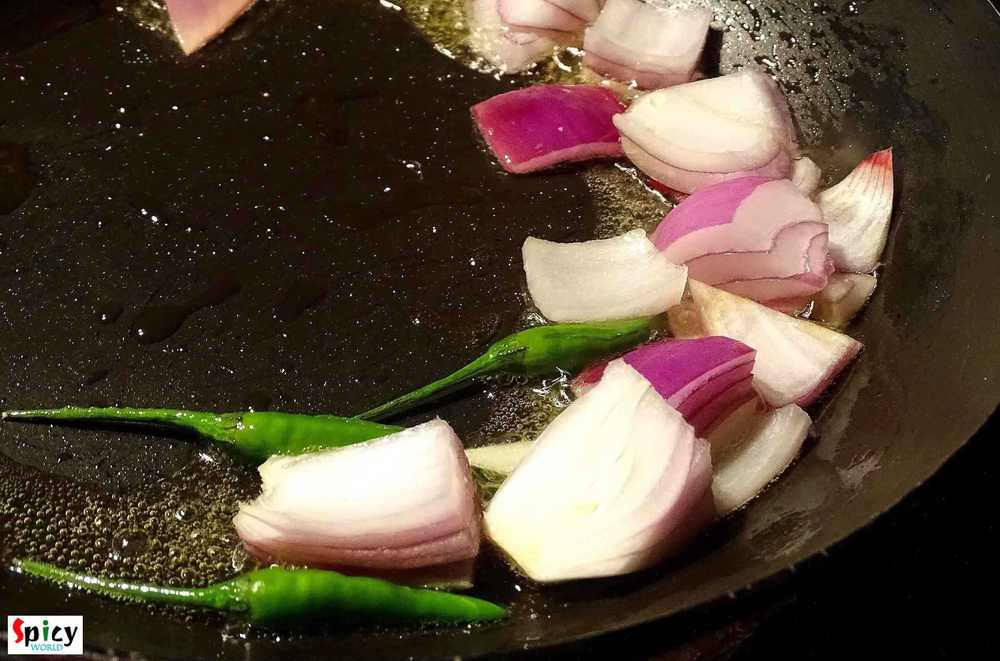
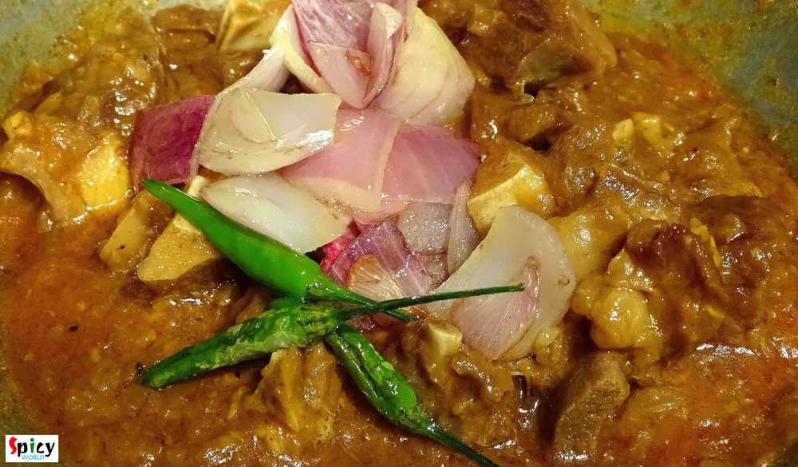

Simple and Easy Recipes
Mutton Dopyaza / Mutton curry with double onion
© 2016 Spicy World, Published on: Dec 13, 2015
In India, 'mutton dopyaza' is a very frequently ordered dish in restaurants. 'Dopyaza' means double amount of onion. From this curry you will get juicy meat, thick gravy and some nice crunch of onions. You can make this curry with chicken and fish also. If you make this dish in any potluck or party, it will become the main attraction. I tried to keep the recipe very simple and easy. Just give it a try.

Ingredients
- 10 - 15 pieces of half boil mutton with stock.
- 1 medium onion finely chopped.
- 1 Teaspoon ginger and garlic paste.
- 5 Teaspoons of curd / yogurt.
- Salt and sugar.
- Spice powder (1 Teaspoon turmeric powder, 1 Teaspoon red chilli powder, half Teaspoon coriander powder and 1 Teaspoon garam masala powder).
- Some onion cubes.
- 3 - 4 green chilies.
- 4 Tablespoons of mustard oil.

Steps
Put the mutton pieces in a pressure cooker with a cup of water and pinch of salt. Give it pressure for 15 minutes or until the meat become little soft. Do not make the mutton fully soft.
Heat oil in a pan.
Add chopped onion. Fry it for 7-8 minutes.
Then add ginger and garlic paste, salt and all the above mentioned spice powder. Mix it very well for 3 minutes.
Bring the heat to low and add the curd and pinch of sugar. Mix it very well for 2 minutes.
Now add the boiled mutton pieces. Don't add the stock now. Mix the meat with the masala very well for 5 minutes.
Then add the mutton stock. Cook this in medium flame until the mutton become fully tendor.
In a different pan heat 2 Teaspoons of white oil.
Add onion cubes and green chilies. Fry them for 1 - 2 minutes.
After cooking the mutton properly, add this fried onion and green chilies. Mix the entire thing once and turn off the heat.
Mutton should have some thick gravy. After adding the fried onion in mutton, don't cook it too much. Otherwise you will not get the nice crunch from onion.
Your Mutton dopyaza is ready ...
Serve it hot with pulao, naan, kulcha or paratha ...
")